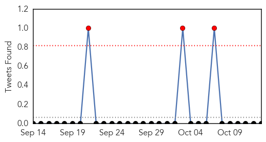
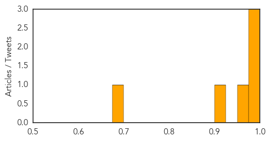
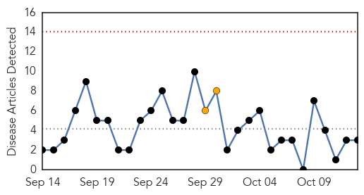

MERS
30-Day Web Trend
0 alerts, 0 warnings
30-Day Twitter Trend
3 alerts, 0 warnings

Article Locations
Article Confidences
Top Articles:
- 0.998
- First Case of MERS-CoV in Austria is Reported to WHO
- 0.984
- Qatar reports 1st MERS case of 2014
- 0.982
- News Scan for Oct 13, 2014
- 0.973
- Ebola, Middle East virus 'paramount concern' for gov't: Aquino
- 0.907
- Half a million pilgrims received medical treatment during Haj
- 0.692
- Aquino: Ebola a 'paramount concern' for Philippines
Top Tweets:
-
No tweets found for Oct 13, 2014
Chikungunya
30-Day Web Trend
0 alerts, 2 warnings

30-Day Twitter Trend
0 alerts, 0 warnings

Article Locations

Article Confidences

Top Articles:
Top Tweets:
-
No tweets found for Oct 13, 2014